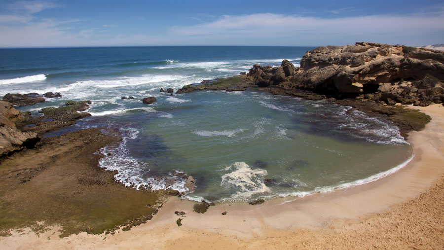
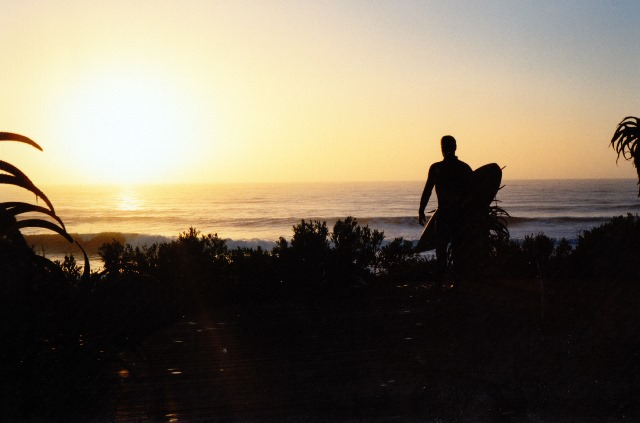
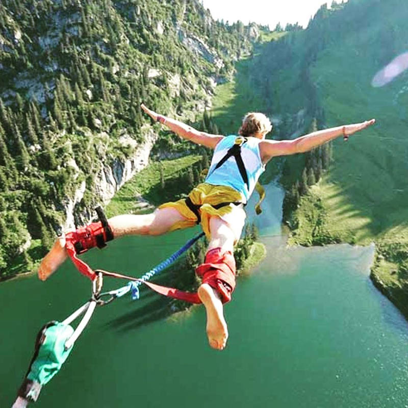

This province is a paradise for nature lovers. High mountains, sandy beaches
and forests are what make this province special. Ideal for surfing, hiking,
sailing, bird viewing and much more.The Eastern Cape is also home to two
National Parks The Addo and the Tsitsikamma.
  Above are images of Cove Rock beach in East London, and the world famous
Jeffreys Bay, one of the best surfbreaks in the world, and the highest
bungee jump in the world at the Bloukrans bridge.